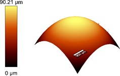
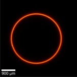
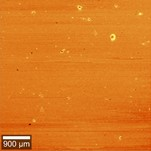

|
TrueSurface Mk3 概述
|
WITec的TrueSurface显微技术选项使共聚焦拉曼成像能够以表面形貌为引导。在其第3代 中，地形学拉曼成像使用集成在仪器内的高级光学轮廓仪，提供单程同步操作。
主题：
系统要求：
除以下模式外适用于所有测量模式：
介绍
TrueSurface（TS）在电动定位装置的扫描范围内实现实时大面积形貌和拉曼成像，即使对于粗糙或倾斜的样品也是如此。图1在硅透镜上展示了该效果。左侧图像显示样品表面的形貌。没有TS时，测量过程中只有一个平面处于聚焦状态，结果产生一个强拉曼信号的环（中间）。右侧图像显示在TS激活的情况下同一区域的测量，这使得能够采集具有持续强信号的拉曼图。



图1：硅透镜。左：形貌。中：标准共聚焦拉曼显微镜下只有一个深度层处于聚焦状态。右：与中间相同的图像，但激活TrueSurface后，Si信号在所有深度都保持恒定，因为样品表面始终保持聚焦。
技术原理
TrueSurface将光聚焦到样品上与拉曼测量激发激光相同的点上。这确定了物镜和样品之间的距离。由于测量反射光，需要在样品表面有不同的折射率。 反馈回路 使系统能够保持距离恒定，从而使样品表面始终保持在拉曼测量的聚焦范围内。这使得样品形貌和拉曼信号的同步测量成为可能。